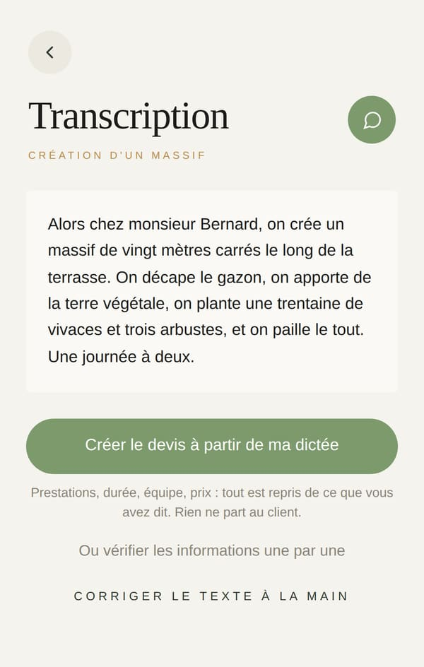
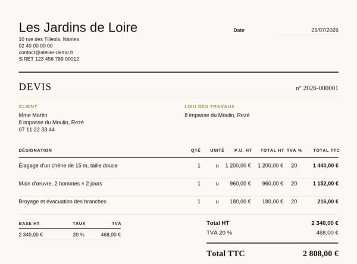
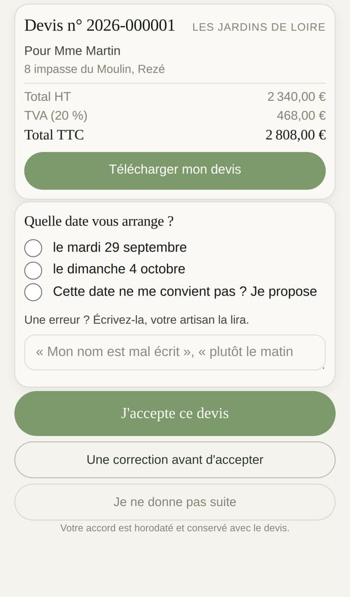
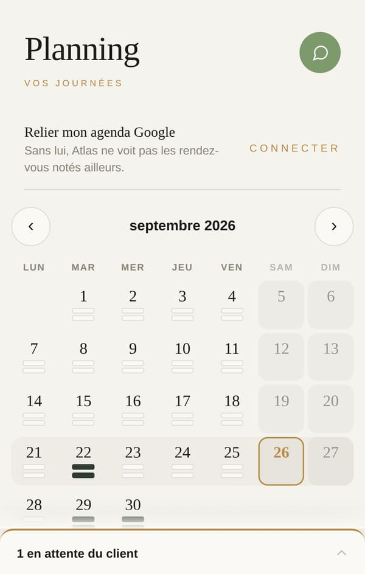
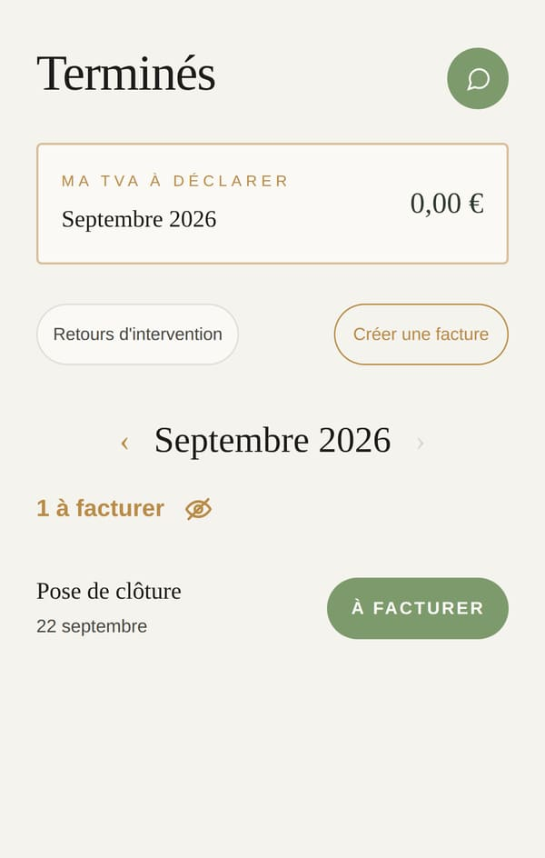
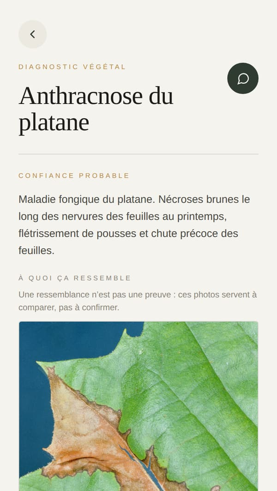
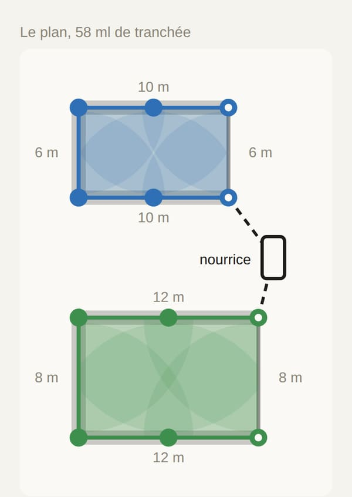

Atlas
La vidéo, en brouillon
42 secondes, en vertical, lisible sans le son. Les écrans sont ceux de l’appli. Touchez une accroche, puis Lecture.
20 minutes de bureau après chaque visite ?
Et si ça prenait 30 secondes.

Vous dictez sur le chantier.

Atlas rédige le devis.

Le client accepte et choisit sa date.


Chantier fini, la facture part en un appui.


Et votre métier, il le connaît.
Atlas
Du devis dicté à la facture,
sans rien retaper.
15 jours d’essai offertspuis dès 39 € HT par mois
[l’adresse du site]
0 s sur 42
Le script, plan par plan
Ce qui reste à me dire
- Le nom commercial : Atlas, ou un autre ?
- L’adresse où la vidéo renvoie : site, page d’inscription, téléphone ?
- Une vidéo de vous sur un chantier, 3 à 4 secondes, pour le plan 2. Sans elle, je mets l’écran seul.
Les clients sont fictifs. Dans la vraie vidéo, la dictée et le diagnostic seront filmés en train de se faire, sur votre espace, où l’IA est branchée.